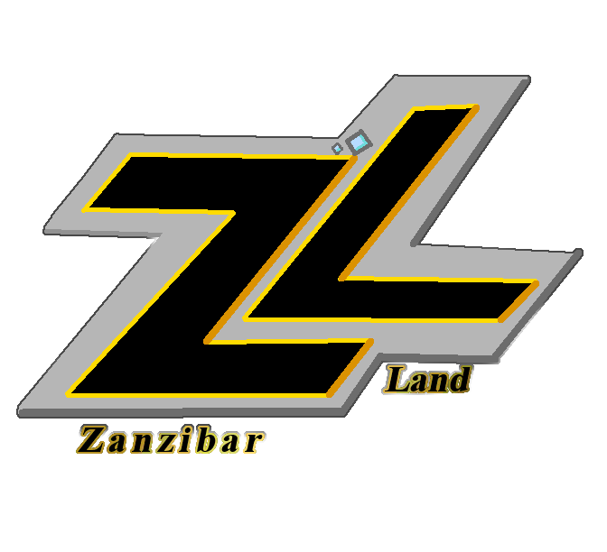

Outer Heaven refere-se a uma serie de conceitos que pertencem ao sonho de Big Boss , que envolvia acabar com o abuso e a exploração de soldados pelos governos mundiais, com base em sua interpretação do testamento de The Boss .
Depois de 1972, Big Boss ficou cada vez mais frustrado com a direção que Zero estava levando os Patriots, então ele deixou o grupo e começou os preparativos para se opor a ele. Big Boss posteriormente formou o grupo militar privado Militaires Sans Frontières (francês para "Soldados sem Fronteiras"), combinando os melhores aspectos de um exército estadual e uma unidade de forças especiais.
O MSF foi contratado para repelir o Peace Sentinel da Costa Rica em 1974, despachando suas forças para várias zonas de guerra em busca de receita para aumentar seus números; bem como manter suprimentos para seu pessoal. À medida que a Base Mãe de MSF cresceu em tamanho e poder, ela ganhou capacidade nuclear. ( Kazuhira Miller referiu-se a ela como a 7ª potência nuclear na época.) Embora ainda considerado um grupo de renegados, Big Boss pensou que MSF estava rapidamente se tornando seu "céu exterior" pessoal: um paraíso de soldado existindo livre de qualquer o controle político de uma potência global; ou um lar para aqueles rejeitados em meio a uma guerra fria global. Depois de derrotar a arma de IA com armas nucleares, Peace Walker, MSF subjugou com sucesso uma rebelião interna instigada por Cipher - também conhecido como Zero - na qual o Metal Gear ZEKE foi sequestrado.
Mais tarde, em 1975, a Mother Base foi atacada por uma força misteriosa conhecida como XOF, liderada por um homem chamado Skull Face. Após uma intensa batalha, a Mother Base foi significativamente danificada, incluindo a destruição de vários de seus suportes via C4; e muitos soldados de MSF foram
Depois de acordar em um hospital em Chipre em 1984, Big Boss se reencontrou com um dos fundadores dos Patriots, Ocelot. Lá, Ocelot (sob a direção de Zero) sugeriu que ele usasse um dublê de corpo, Venom Snake , para distrair XOF e o mundo do verdadeiro Big Boss; mas, ao mesmo tempo, expande sua lenda.
Venom Snake mais tarde seria resgatado por Ocelot e iria para o Afeganistão para resgatar Kazuhira Miller das forças soviéticas. Snake conseguiu resgatar Miller; e os dois juraram se vingar de Cipher por tudo que haviam perdido e reconstruído, com Venom Snake já se declarando um demônio caído.
Foi durante esse período que ele reorganizou o que restava de MSF em uma unidade conhecida como Diamond Dogs: um grupo disposto a realizar trabalhos desagradáveis para qualquer cliente que precise. Por meio dele, ele expandiu seu conceito Outer Heaven de um que apenas aceita soldados sem pátria, para uma força mercenária completa e infame. Durante esses eventos, foi revelado que o verdadeiro Big Boss já havia estabelecido o "real" Outer Heaven na África do Sul. Embora não seja explicitamente declarado, pode-se supor que os Diamond Dogs foram absorvidos pelo Outer Heaven.
Na década de 1980, Big Boss estabeleceu uma nação totalmente independente, "Outer Heaven", 200 quilômetros ao norte de Galzburg, África do Sul . Outer Heaven tornou-se um santuário para soldados desiludidos, onde não seriam usados como peões de seu governo; e onde eles sempre teriam um lugar - seja no campo de batalha ou na sociedade em geral. Para garantir, Big Boss reforçou a força militar da nação incipiente com o tanque bípede TX-55 Metal Gear , que era capaz de lançar um ataque nuclear de qualquer lugar do planeta. Big Boss mais tarde retornou ao exército dos EUA para comandar a FOXHOUND , enquanto Venom Snake assumiu seu lugar em Outer Heaven. Em 1995, as atividades de Outer Heavenforam descobertos pelo Ocidente, e a FOXHOUND recebeu ordens de se infiltrar no estado mercenário e destruir o Metal Gear. Big Boss enviou o agente novato Solid Snake , acreditando que ele falharia em sua missão. No entanto, Snake teve sucesso, desafiando as expectativas de Big Boss; e destruiu o Metal Gear. Quando a sequência de autodestruição de Outer Heaven foi posteriormente ativada, Venom Snake confrontou Solid Snake, na esperança de garantir a morte de ambos na explosão. No entanto, ele falhou em conseguir isso e morreu nas mãos de Snake.
Pouco depois, a OTAN lançou um ataque aéreo para eliminar quaisquer instalações remanescentes do Outer Heaven, indiferente às mortes resultantes das pessoas na área (já que os órfãos e refugiados da guerra eram considerados um risco). Big Boss conseguiu salvar muitos deles, incluindo o pessoal sobrevivente da fortaleza; mercenários; e até membros da Resistência: os últimos dos quais ele perdoou por sua oposição inicial a ele.
Em 1999 , Big Boss - tendo fingido sua morte após a queda de Outer Heaven - continuou a perseguir sua visão de Outer Heaven com Zanzibar Land e Metal Gear D (também projetado por Dr. Madnar); embora seus planos tenham sido novamente frustrados por Solid Snake.
Após a aparente morte de Big Boss e o colapso de Zanzibar Land, seus mercenários tiveram seus contratos comprados pelo governo dos Estados Unidos e se tornaram membros reserva das Forças Especiais de Próxima Geração , com quem Solid Snake batalharia mais uma vez em 2005 .
Membros Conhecidos:
"Big Boss" (Fundador)
"Venom Snake" (Comandante)
"Bloody Brad"
"Dirty duck"
"Fire Trooper"
"Machinegun Kid"
"Shotmaker"
"Vulcan Raven"
Em 2014, Liquid Ocelot montou um novo Outer Heaven como empresa-mãe para seus exércitos PMC e comandou um navio de guerra da classe Arsenal Gear , com o objetivo final de causar a destruição do satélite orbital AI dos Patriots . Seu plano público era lançar uma bomba nuclear não registrada em JD por meio da arma ferroviária do REX, embora ele secretamente pretendesse que Snake carregasse um vírus.no sistema de IA para destruí-lo e deixar a sociedade em um estado de caos e ordem sem lei.
Sem o conhecimento de Liquid Ocelot, este plano foi frustrado devido a Sunny fazer as modificações no vírus para que, quando Solid Snake usasse o vírus para infectar e destruir a rede de IA, ele preservasse sua função de regular o essencial para a sociedade e manter a massa de informações intactas. Apesar de sua visão nunca ter sido realizada, Liquid Ocelot acreditava que o sonho de Big Boss de Outer Heaven havia sido realizado.